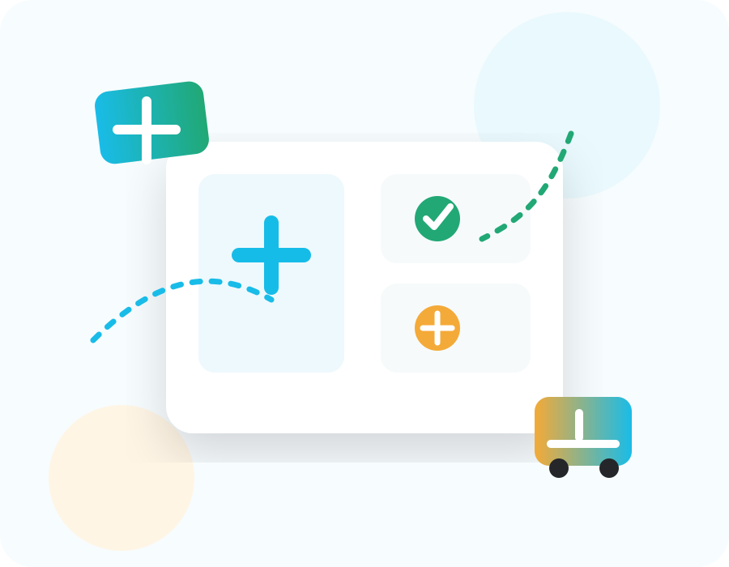

Medicare
Связаться с Medicare
Выберите тип обращения и оставьте свои данные. Можно приложить рецепт или медицинские документы, и мы направим запрос соответствующей команде.

Контактные данные
Мы здесь, чтобы помочь
Служба поддержки и фармацевты Medicare доступны для обращений, вопросов и сопровождения.
Телефон: 08-6604455
Email: PHARMACY@MEDICARE.CO.IL
Адрес: ул. Цела ха-Хар 1, Модиин, Израиль
Часы работы: Вс–Ср 08:00–17:00 | Чт 08:00–16:00
WhatsApp: 08-6604455